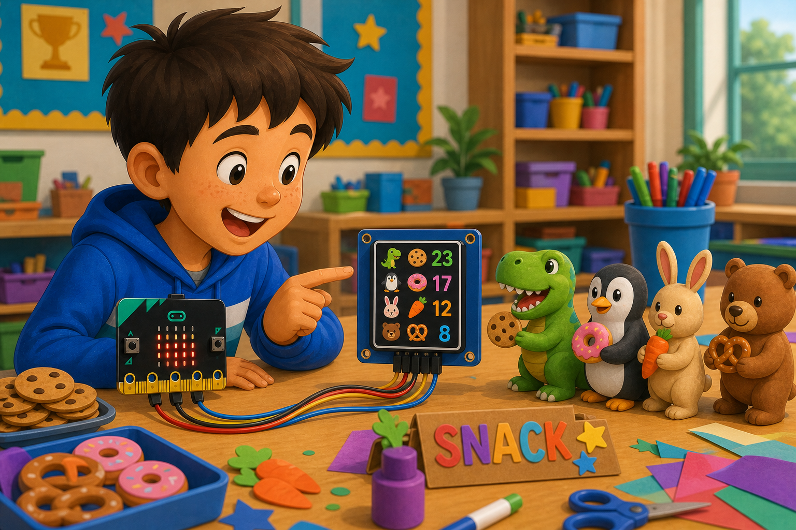

Tiny game screen
DetectPlayer moves
→
DecideNew game picture
→
DoSend screen data
SPI is a fast way for your micro:bit to send data to modules.
It uses a clock wire, data wires, and usually a chip select pin.
Use SPI with displays, memory modules, LED drivers, and other speedy parts.

from microbit import *
spi.init(baudrate=1000000)
pin0.write_digital(0)
spi.write(b'\x00')
pin0.write_digital(1)pins.spiPins(DigitalPin.P15, DigitalPin.P14, DigitalPin.P13)
pins.digitalWritePin(DigitalPin.P0, 0)
pins.spiWrite(0)
pins.digitalWritePin(DigitalPin.P0, 1)